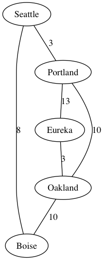

For \(n\)-Queens game, can make state graph acyclic by having each state be a board with at most \(n\) queens. Then, states are connected if you can get from the source to the target by placing a new queen on some square.
But there are different ways to do this. For example, could connect states only when placing the new queen does not allow it to be attacked.
A state machine \(M = (Q, \Sigma, \Delta, q_0, F, w)\) where
$$ \begin{aligned} Q &\text{ is the set of states} \\ \Sigma &\text{ is the set of actions} \\ \Delta \subseteq Q \times \Sigma \times Q & \text{ is the set of permissible transitions} \\ q_0 &\text{ is the initial state} \\ F &\text{ is the set of final states} \\ w : \Delta \rightarrow \mathbb{R} &\text{ assigns a weight to each transition} \end{aligned} $$
Definition. A search path is a sequence \(\langle d_0 , \dots , d_k \rangle\) of transitions \(d_i \in \Delta\) where \(d_i = (q_i, \sigma_i, q_{i+1})\) for \(\sigma_i \in \Sigma\).
Definition. A search path is a solution if \(q_{k+1} \in F\).
Generally, state machines are restricted to finite states (FSA). But in search, we would prefer just an SA, without the finiteness restriction
Conjecture. (Donald Knuth) Any positive integer can be obtained by starting with the number 4, and applying some equence of factorial, square root, and floor operations.
Turns out the state space for this is \(\mathbb{R}_+\), so there are uncountably infinitely many states.
There are two dimensions to categorizing state machines: cyclic vs acyclic, finite vs state.